FPV Audio Recorder
Onboard FPV audio without an extra action camera. A tiny, battery-free recorder that saves audio while the quad is armed and shows up as a USB drive when you plug it in.
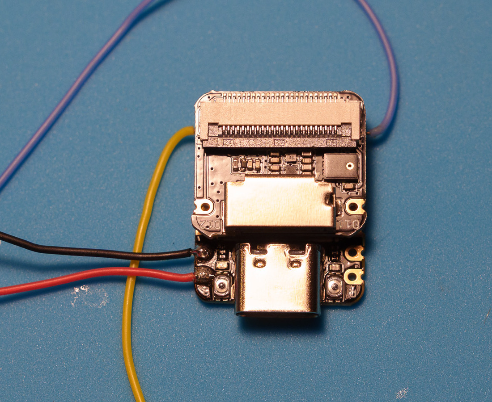
The build
Seeed Studio XIAO ESP32S3 Sense with its microphone board, no separate battery. The camera has been removed to save weight. Power and arm state come from the Flywoo flight controller’s UART1 socket through its supplied harness and a diode.
The recorder reads Betaflight arm status and the clock over that UART (read-only) and never issues flight commands. Firmware v2 stores audio in the XIAO’s internal flash, so there’s no microSD card to fail or lose.
The board stack slides into the one-piece V7 case, which is taped to the frame. The case roof has a small grille over the microphone.
Build photographs
Real photographs of this prototype, cropped for a closer view. See the illustrated build guide for the sequence, wire colors and planned diode connection.

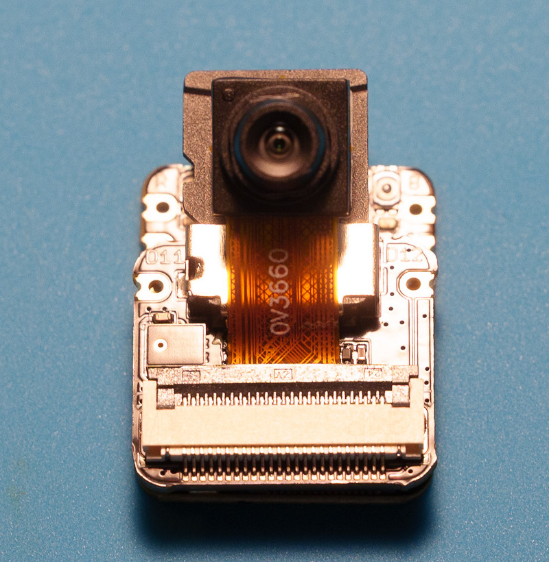

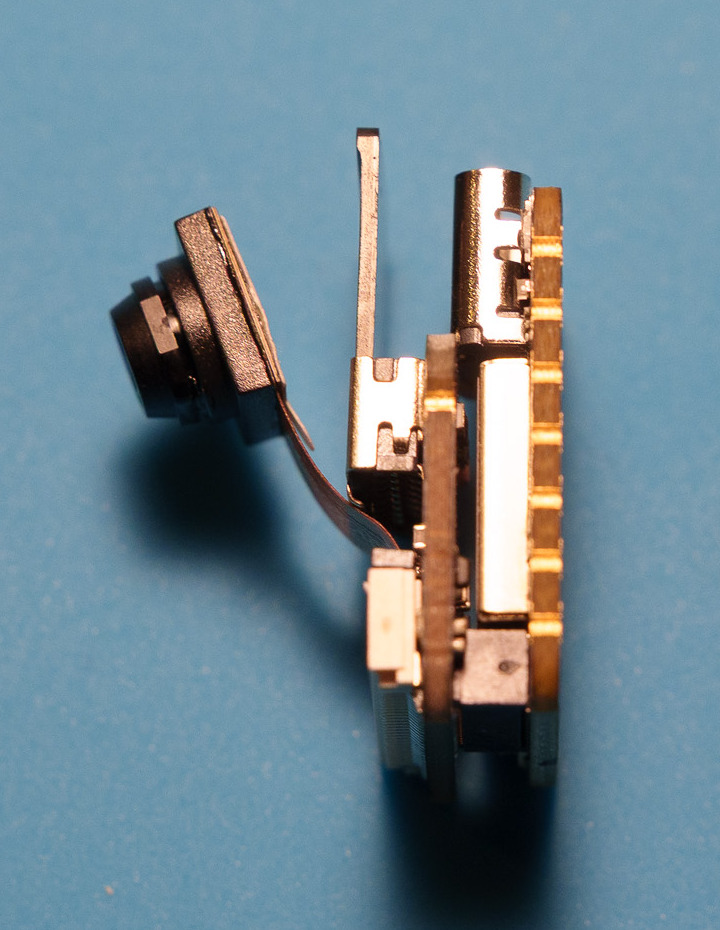

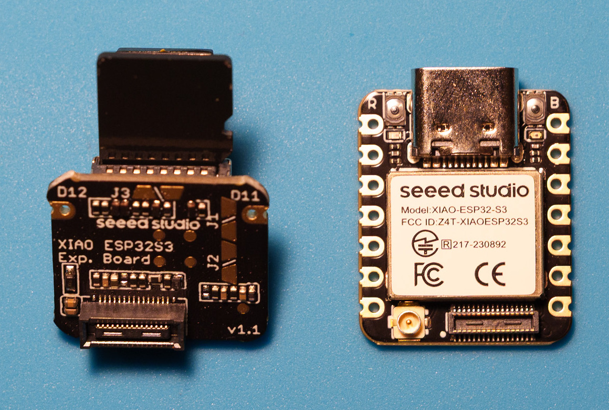

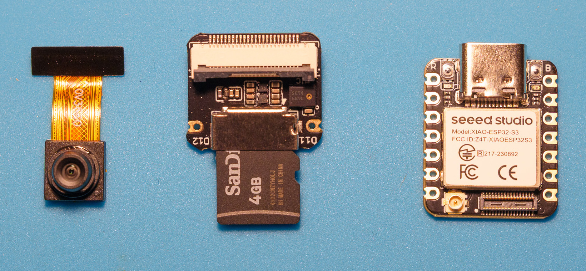

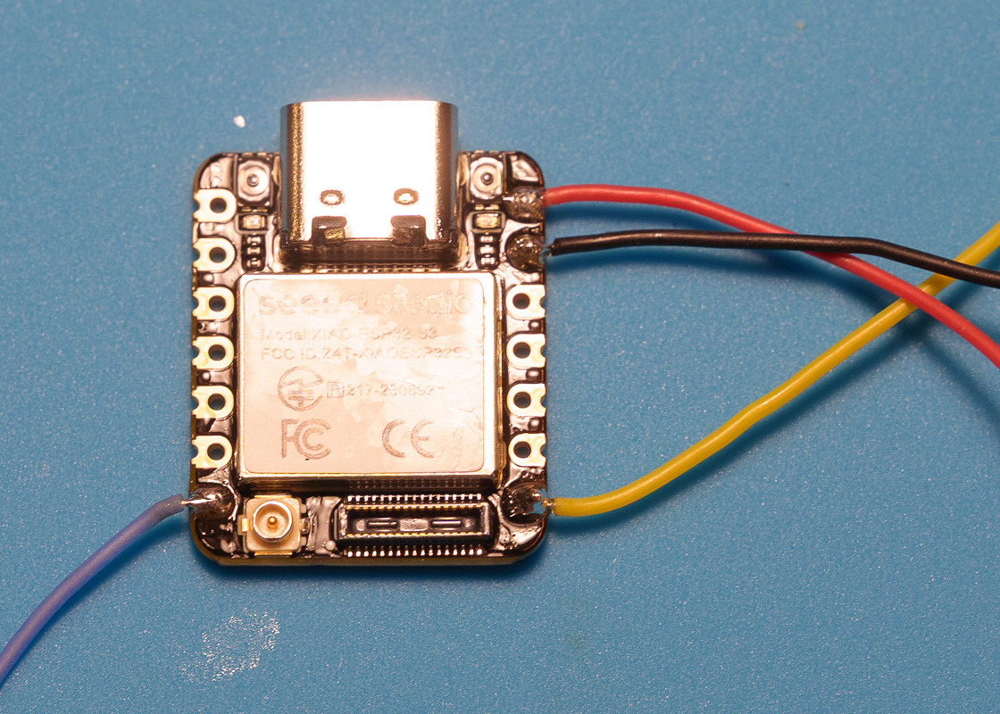

Progress
- Complete: microphone, microSD, USB transfer, and two-minute still-air bench recording.
- Complete: local Easy Eject flash, temperature display, and byte-matched WAV import.
- Complete: Flywoo UART1 harness and diode, props-off and hand-held arm/disarm recording (October 10).
- Complete: first outdoor flight recordings with the microSD firmware (October 13).
- Bench-tested: firmware v2, internal flash, USB drive, one timestamped WAV per flight, B-button format (October 18).
- Printed and mounted: V7 one-piece TPU case (October 18).
- Next: flight test of firmware v2 in the V7 case, including arm/disarm with the flight controller’s clock.
- Next: Easy Eject support for firmware v2.
Flywoo connector installation plan
The GOKU F405 SE 20A AIO has an unused UART1 five-position socket. A supplied plug with four wires can connect the recorder without soldering onto the flight controller. Recorder pad wires, cable splices and an inline Schottky diode still require soldering.
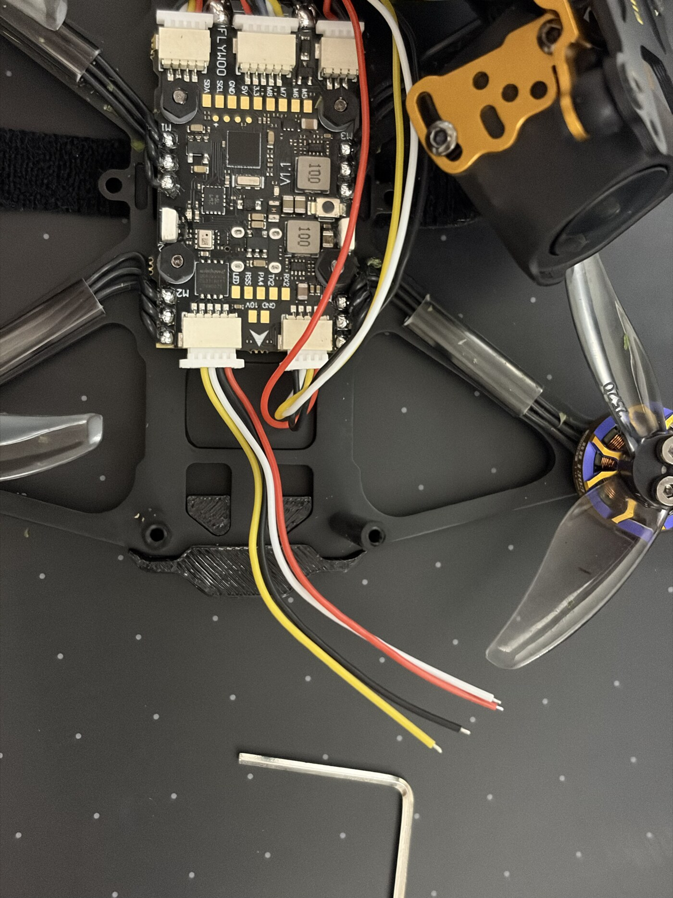
The socket’s 4.5 V supply through the diode is a proposed power source, not a verified recording result. Receiver UART3, GPS UART4 and DJI UART6 are occupied. See the wire mapping, official diagram and pending test steps.
Firmware v2: the recorder as a USB drive
Bench-tested 2026-10-18; flight test pending. Firmware v2 records to the XIAO’s own 8 MB flash instead of microSD.
- Plug it into a computer and it appears as a read-only USB drive called
FPVAUDIO, with one WAV per flight,FLIGHTS.CSVand aREADME.TXT. - Files are named by the flight controller’s clock, for example
FPV_20261018173825_P0005_F01.WAV, and carry a Broadcast WAV time reference so editors can place them by time of day. - About 30 minutes fit. When it’s full, the oldest audio is overwritten.
- To erase everything, hold the button marked B for about 10 seconds while steadying the USB plug. The LED blinks, blinks faster, then gives three long flashes.
- Host tools download over USB serial and line the audio up with DJI O4 Pro clips.
Download firmware v2 · Source, install steps and bench results
Not yet tested with v2: a real flight, and arm/disarm with a live flight controller and its clock.
Printable recorder case: V7 sleeve
A one-piece TPU sleeve, 23.76 × 20.68 × 11.18 mm and 2.15 g. The board stack slides in from the open back and clicks over a small floor detent, with no lid and no glue. The roof has a mic grille and holes for the B and R buttons, and the flat underside takes mounting tape. Print it standing, USB face down, as saved, and dry the TPU first to avoid stringing.
Bench-tested 2026-10-18; flight test pending. Printed, fitted and mounted on the drone, not flown yet.
Download the V7 case · Editable source, dimensions, and print notes

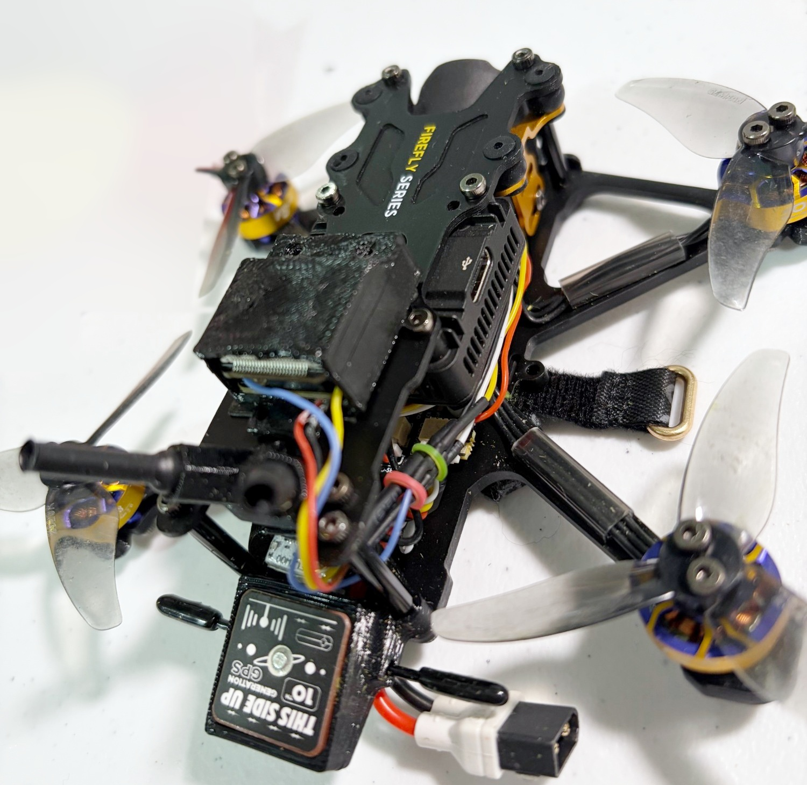

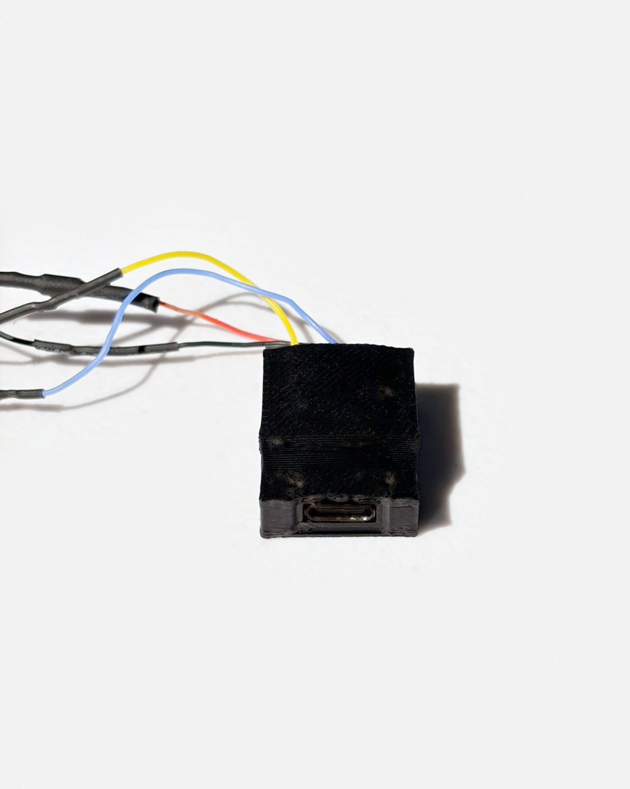

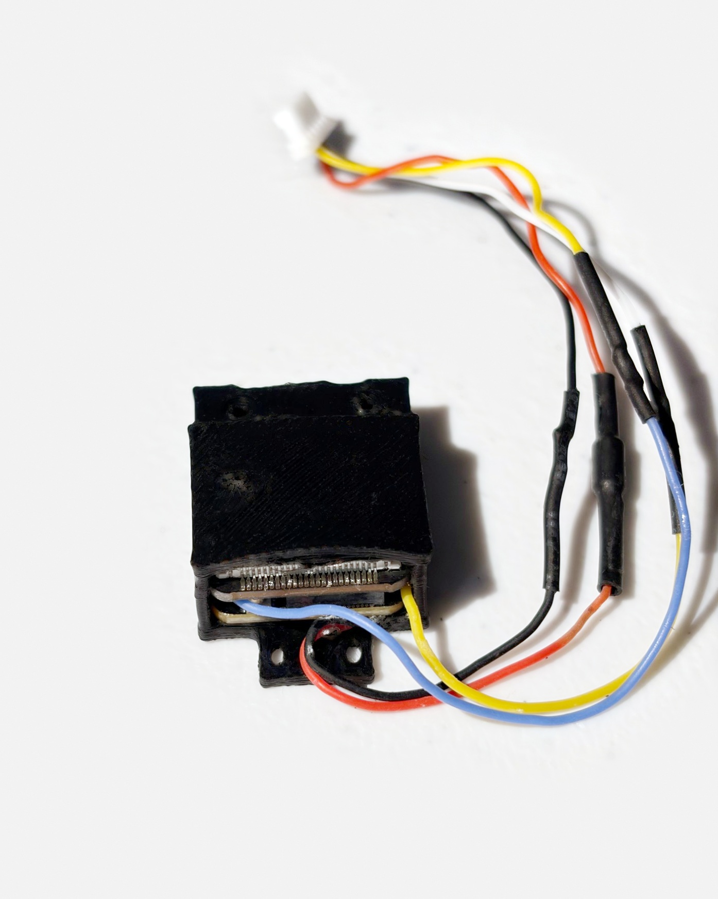

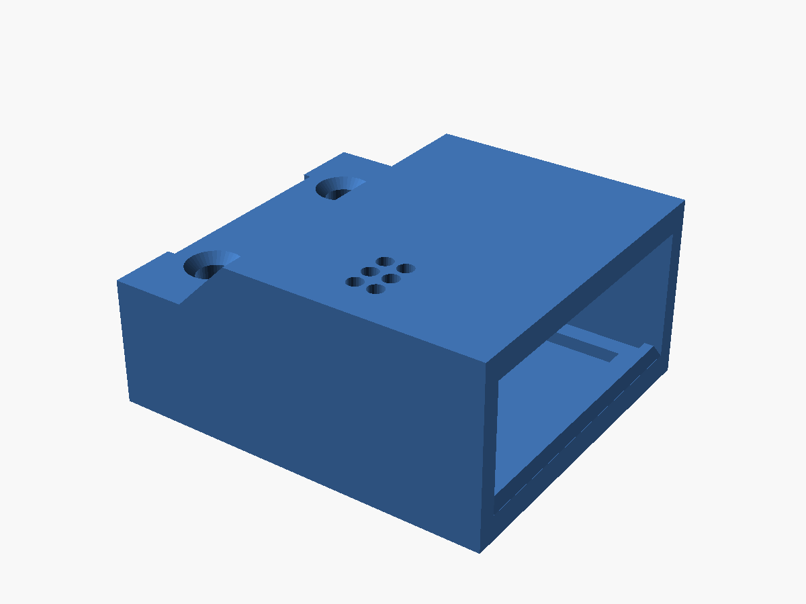
I'm new to 3D printing, so there's probably a better way to design this case. If you come up with a different or improved design, please submit a pull request! Ideas, photos, and printable files are welcome through GitHub issues too.
Previous case: the V6.5 two-piece case with microSD access (source and notes), for builds that still use the card.
Operating note
Give the powered quad airflow whenever it sits still, including while connected to a computer. Bench chip temperatures (about 40°C with firmware v2 on USB, no airflow) are observations, not a flight-temperature or long-idle rating.
Firmware v2 and the V7 case are pre-releases: bench-tested, not yet flight-tested. The Easy Eject integration is still a local preview and doesn’t recognise firmware v2 yet.